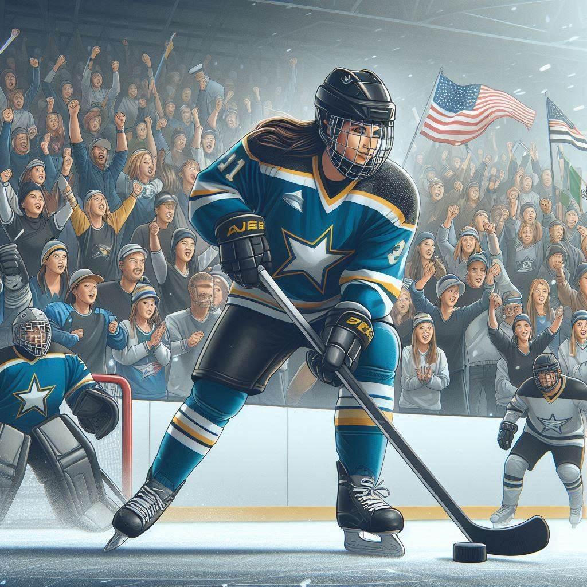

Hóquei no gelo
O Hóquei no gelo é um esporte de origem Canadense e atualmente é o esporte oficial do país, também sendo praticado em vários outros países. É um esporte de disputa entre duas equipes compostas por 6 jogadores cada, sendo dois defensores, três atacantes e um goleiro. É praticado em pistas de gelo especial com temperaturas de menos 10°C. O objetivo do hóquei é levar o disco, também conhecido como “puck”, até o gol, utilizando os tacos ou “sticks” para movimentar o disco.
Os jogadores utilizam patins e tacos em formato de L feitos de madeira com segurador e lâmina. O disco é feito de borracha, pesa de 156 a 170 gramas e mede 2,5 centímetros de espessura por 7,6 centímetros de diâmetro. Os jogadores também utilizam protetores para boca, ombros, cotovelos, pernas e pescoço, além de luvas, joelheiras e capacete. Cada time possui um capitão, identificado pela letra “C” em seu uniforme.
Cada partida dura 60 minutos e é divida em três tempos de 20 minutos com intervalos de 15 minutos. As equipes têm direito a um pedido de tempo (timeout) de 30 segundos durante a partida, podem ser solicitado apenas quando a partida for interrompida. O jogo recomeça quando árbitro lança o disco, esse momento é chamado de “face-off”. Não há limite de substituições de jogares. O objetivo do jogo é acertar o disco no gol do adversário, cada gol equivale a um (01) ponto, a equipe com o maior número de pontos ao final da partida vence. Em caso de empate, é acrescido 5 minutos e a equipe que fizer gol primeiro vence a partida.
Hóquei no campo
O Hóquei no campo surgiu na Inglaterra em 1908 e é um esporte olímpico. Cada equipe é composta por 11 jogadores, sendo um goleiro, o lateral direito e esquerdo, três zagueiros e cinco atacantes. É praticado em campos com 91,40 metros de comprimento e 55 metros de largura. As partidas duram 60 minutos no total, divididas em quatro tempos de 15 minutos. Uma das equipes pode optar por jogar sem goleiro, temporariamente. A equipe que fizer mais gols vence a partida. Na fase de grupos no torneio olímpico, se houver empate no final da partida, o empate permanece. Já em partidas eliminatórias, o empate leva à disputa de pênaltis para determinar um vencedor.
Os jogadores utilizam um bastão em forma de gancho, apenas o lado plano do bastão pode ser usado. Apenas os goleiros podem tocar na bola com as mãos ou pés. A bola oficial é feita de cortiça e plástico, possui 2,3 cm de circunferência e seu peso é de 160 gramas.
Em caso de falta o árbitro pode aplicar ao jogador um cartão verde (suspensão de dois minutos), amarelo (suspensão de cinco minutos) ou vermelho (expulsão). Não há limites de substituições.